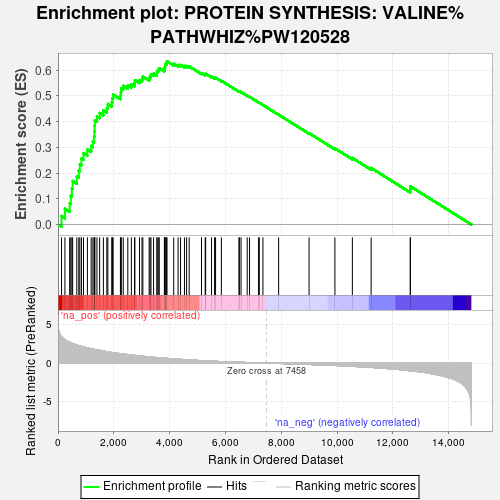
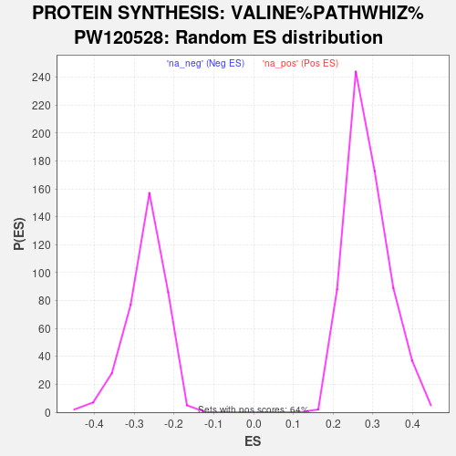

| | | Dataset | vtp_ctrl |
| Phenotype | NoPhenotypeAvailable |
| Upregulated in class | na_pos |
| GeneSet | PROTEIN SYNTHESIS: VALINE%PATHWHIZ%PW120528 |
| Enrichment Score (ES) | 0.63417554 |
| Normalized Enrichment Score (NES) | 2.2144487 |
| Nominal p-value | 0.0 |
| FDR q-value | 0.0 |
| FWER p-Value | 0.0 |
Table: GSEA Results Summary

Fig 1: Enrichment plot: PROTEIN SYNTHESIS: VALINE%PATHWHIZ%PW120528
Profile of the Running ES Score & Positions of GeneSet Members on the Rank Ordered List
| SYMBOL | RANK IN GENE LIST | RANK METRIC SCORE | RUNNING ES | CORE ENRICHMENT | | 1 | RPL36 | 126 | 3.443 | 0.0328 | Yes |
| 2 | RPL17 | 248 | 3.040 | 0.0611 | Yes |
| 3 | RPL18 | 418 | 2.734 | 0.0825 | Yes |
| 4 | RPL28 | 458 | 2.638 | 0.1115 | Yes |
| 5 | FAU | 498 | 2.579 | 0.1399 | Yes |
| 6 | RPLP2 | 525 | 2.555 | 0.1688 | Yes |
| 7 | RPL13 | 674 | 2.355 | 0.1871 | Yes |
| 8 | RPL38 | 746 | 2.273 | 0.2095 | Yes |
| 9 | RPS5 | 783 | 2.238 | 0.2340 | Yes |
| 10 | RPL8 | 840 | 2.177 | 0.2563 | Yes |
| 11 | RPS18 | 913 | 2.117 | 0.2769 | Yes |
| 12 | RPS26 | 1053 | 1.994 | 0.2914 | Yes |
| 13 | RPL35 | 1188 | 1.879 | 0.3049 | Yes |
| 14 | RPS16 | 1250 | 1.834 | 0.3228 | Yes |
| 15 | RPS14 | 1293 | 1.798 | 0.3415 | Yes |
| 16 | RPS15 | 1307 | 1.784 | 0.3621 | Yes |
| 17 | RPS9 | 1313 | 1.781 | 0.3831 | Yes |
| 18 | VARS1 | 1320 | 1.778 | 0.4041 | Yes |
| 19 | RPL24 | 1396 | 1.725 | 0.4197 | Yes |
| 20 | RPLP1 | 1493 | 1.667 | 0.4332 | Yes |
| 21 | RPL18A | 1626 | 1.573 | 0.4432 | Yes |
| 22 | RPL13A | 1751 | 1.497 | 0.4527 | Yes |
| 23 | RPL29 | 1786 | 1.471 | 0.4681 | Yes |
| 24 | RPL26 | 1926 | 1.381 | 0.4753 | Yes |
| 25 | RPS28 | 1950 | 1.369 | 0.4901 | Yes |
| 26 | RPL10A | 1976 | 1.349 | 0.5047 | Yes |
| 27 | RPS2 | 2237 | 1.228 | 0.5018 | Yes |
| 28 | RPL23 | 2255 | 1.222 | 0.5153 | Yes |
| 29 | RPL30 | 2266 | 1.216 | 0.5292 | Yes |
| 30 | UBA52 | 2338 | 1.184 | 0.5386 | Yes |
| 31 | RPS21 | 2502 | 1.115 | 0.5410 | Yes |
| 32 | RPS8 | 2629 | 1.057 | 0.5451 | Yes |
| 33 | RPS19 | 2742 | 1.007 | 0.5496 | Yes |
| 34 | RPS3 | 2755 | 1.000 | 0.5608 | Yes |
| 35 | RPL10 | 2921 | 0.935 | 0.5609 | Yes |
| 36 | RPL27A | 3010 | 0.903 | 0.5657 | Yes |
| 37 | RPL37A | 3041 | 0.892 | 0.5744 | Yes |
| 38 | RPL32 | 3266 | 0.812 | 0.5690 | Yes |
| 39 | RPS11 | 3299 | 0.800 | 0.5764 | Yes |
| 40 | RPS27 | 3332 | 0.786 | 0.5837 | Yes |
| 41 | RPL31 | 3425 | 0.756 | 0.5865 | Yes |
| 42 | RPL27 | 3547 | 0.723 | 0.5870 | Yes |
| 43 | RACK1 | 3549 | 0.722 | 0.5956 | Yes |
| 44 | RPL14 | 3593 | 0.710 | 0.6012 | Yes |
| 45 | RPL35A | 3629 | 0.698 | 0.6072 | Yes |
| 46 | RPL3 | 3812 | 0.638 | 0.6025 | Yes |
| 47 | RPL37 | 3818 | 0.637 | 0.6098 | Yes |
| 48 | RPS24 | 3837 | 0.633 | 0.6162 | Yes |
| 49 | RPL4 | 3843 | 0.631 | 0.6235 | Yes |
| 50 | RPS17 | 3891 | 0.617 | 0.6277 | Yes |
| 51 | RPS25 | 3905 | 0.614 | 0.6342 | Yes |
| 52 | RPLP0 | 4147 | 0.544 | 0.6244 | No |
| 53 | RPS15A | 4303 | 0.503 | 0.6199 | No |
| 54 | RPL19 | 4392 | 0.481 | 0.6197 | No |
| 55 | RPL41 | 4532 | 0.454 | 0.6157 | No |
| 56 | RPL12 | 4609 | 0.438 | 0.6158 | No |
| 57 | RPS20 | 4701 | 0.413 | 0.6146 | No |
| 58 | RPL11 | 5143 | 0.321 | 0.5885 | No |
| 59 | RPL21 | 5275 | 0.295 | 0.5832 | No |
| 60 | RPL34 | 5292 | 0.293 | 0.5856 | No |
| 61 | RPL7A | 5503 | 0.253 | 0.5744 | No |
| 62 | RPL6 | 5612 | 0.234 | 0.5699 | No |
| 63 | RPS10 | 5647 | 0.228 | 0.5703 | No |
| 64 | RPS6 | 5854 | 0.190 | 0.5586 | No |
| 65 | RPL23A | 6486 | 0.110 | 0.5171 | No |
| 66 | RPL15 | 6499 | 0.108 | 0.5176 | No |
| 67 | RPS29 | 6560 | 0.100 | 0.5147 | No |
| 68 | RPS4X | 6780 | 0.072 | 0.5008 | No |
| 69 | RPL5 | 6864 | 0.063 | 0.4959 | No |
| 70 | RPS13 | 7187 | 0.027 | 0.4743 | No |
| 71 | RPSA | 7214 | 0.024 | 0.4729 | No |
| 72 | RPS12 | 7344 | 0.009 | 0.4642 | No |
| 73 | RPS7 | 7907 | -0.047 | 0.4266 | No |
| 74 | RPL7 | 8998 | -0.177 | 0.3548 | No |
| 75 | RPL36A | 9924 | -0.307 | 0.2957 | No |
| 76 | RPL22 | 10549 | -0.422 | 0.2584 | No |
| 77 | RPS23 | 11222 | -0.565 | 0.2196 | No |
| 78 | RPL39 | 12625 | -0.997 | 0.1364 | No |
| 79 | RPS3A | 12628 | -0.998 | 0.1483 | No |
Table: GSEA details [plain text format]

Fig 2: PROTEIN SYNTHESIS: VALINE%PATHWHIZ%PW120528: Random ES distribution
Gene set null distribution of ES for PROTEIN SYNTHESIS: VALINE%PATHWHIZ%PW120528